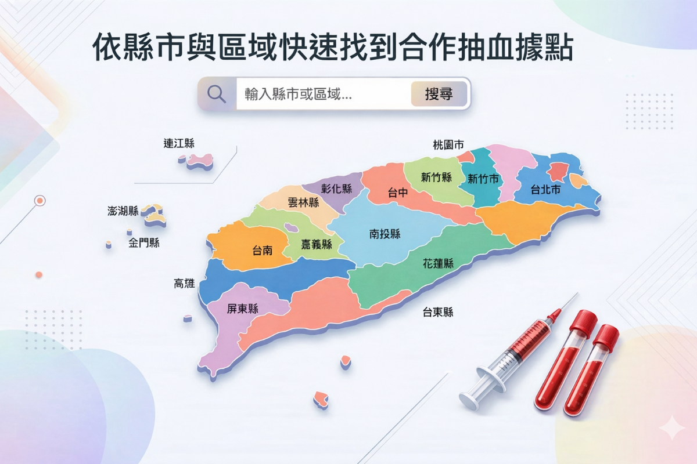
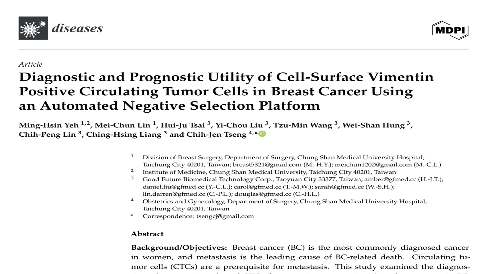

2 mL blood sample
A small blood sample is enough to complete the test.
A 3-minute blood draw provides reference information for multi-cancer risk assessment and follow-up.
Good Future specializes in circulating tumor cell (CTC) testing. Using a 2 mL blood sample, the service combines a negative selection workflow, cell-image evidence, and structured reporting. Normal blood cells are removed first so more potential CTC phenotypes can be retained for review and follow-up discussion.

A small blood sample is enough to complete the test.
Reports are typically delivered within 5 business days.
Trusted by medical institutions, laboratories, and biotech partners.
Supports trust in laboratory quality, certification, and service consistency.
Understand the service features that distinguish Good Future’s CTC testing approach.
Differentiator 01
Removes normal blood cells first and preserves more clinically meaningful CTC phenotypes.
Differentiator 02
Supports review of both epithelial and mesenchymal phenotypes instead of relying on a single signal.
Differentiator 03
Reports include image evidence and interpretation details alongside summary results.
Differentiator 04
Designed to support longitudinal follow-up, molecular testing, and research applications.
CTC testing may be considered based on risk profile, suspicious findings, or follow-up needs.

Family history of cancer
Frequent smoking or drinking
Abnormal imaging findings
Abnormal blood tumor markers
Monitor treatment response
Monitor risk of recurrence
From technology licensing and system development to clinical, insurance, and overseas collaboration, Good Future continues to expand where CTC testing can be applied.

The Chang Gung technology license became the starting point for R&D and later expanded into automated system development, workflow integration, and service deployment.
Collaboration with Taipei Veterans General Hospital helped align the system and service workflow with medical-center practice and strengthen clinical understanding of sampling and image review.
The 17th National Innovation Award provided external recognition and strengthened trust in the R&D progress behind Good Future’s automated detection system.
Partnerships with Global Life and Nan Shan Life extended CTC testing from medical settings into corporate and insurance-related service scenarios.
Good Future is working with Malaysian smart-health company WellSpring on new projects covering CTC testing, intestinal wellness, and probiotics.
The CTC detection system obtained a Malaysian medical device license in August 2025, creating a clearer foundation for subsequent market rollout and service implementation.
In addition to testing services, you can quickly reach blood collection, product, and wellness information from the sections below.

Search by city and district to find blood collection partners and site information.

Browse testing systems, consumables, and related product information.

Browse products designed for everyday wellness support.
Quickly review brand updates, technical insights, and video content.

Quickly review Good Future’s latest published breast cancer CTC study and its core findings.
Start from the testing principle to understand the value of negative selection and cell-image reporting.
Start with a short video overview, then continue to the full resource library for more articles and videos.